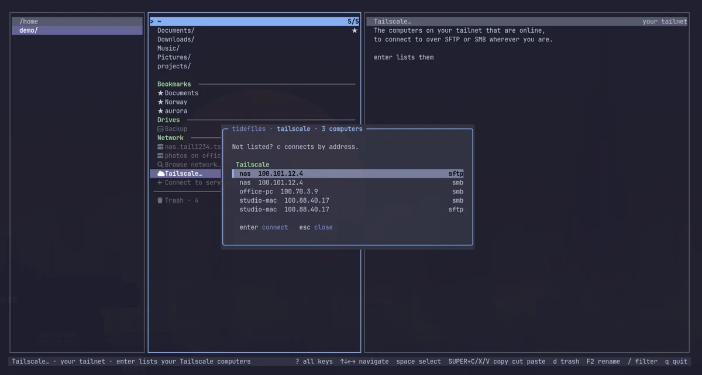

console-places
v0.13.0 · GoA keyboard-first, three-pane file manager for your terminal. Previews code, images, video, markdown and spreadsheets in the pane, keeps your bookmarks, drives, phones, Tailscale computers and frequent folders right in the file list, bulk-renames with a live preview, and follows your Omarchy theme. Optional Nerd Font file-type icons. (Formerly tidefiles.)
arch=amd64 # or arm64 curl -L https://github.com/linuxbren/console-places/releases/latest/download/console-places_linux_$arch.tar.gz | tar xz console-places install -Dm755 console-places ~/.local/bin/console-places
Linux only, x86_64 or arm64. Static binary, updates itself. Packages and Nix too — see the repo.
New in v0.13.0: Phones in places — Android (MTP), iPhone (AFC, with photos/media plus App documents) and cameras (gphoto2) show under Phones; enter mounts, u/d ejects. Needs gvfs-mtp / gvfs-afc + usbmuxd / gvfs-gphoto2.